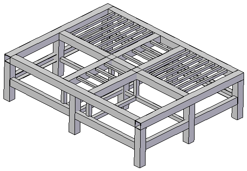
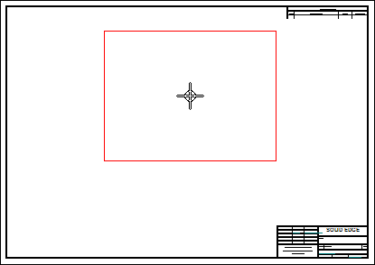
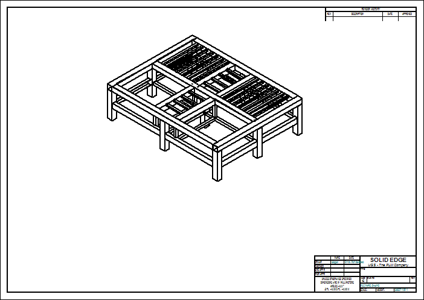
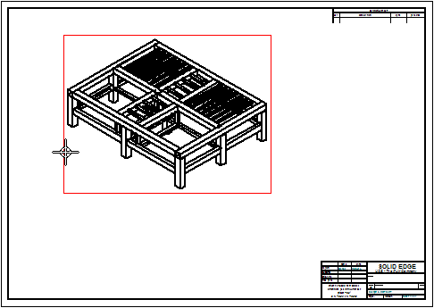
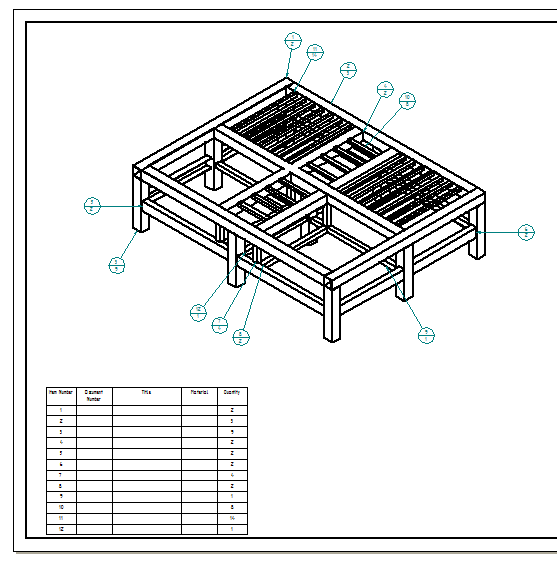
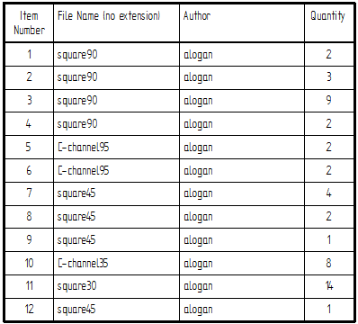

Activity: Creating a frames parts list
In this activity, create a parts list that includes cut lengths for each component and choose how you want to organize the list for downstream viewers in manufacturing or purchasing. Create a parts list using rough-cut sizing, where you specify an amount that the system automatically adds to the exact length of frame. The last parts list includes the total length of each frame component.
Open draft01.asm.

Choose Application→New→Drawing of Active Model.
In the Create Drawing dialog box, make sure the Run Drawing View Creation Wizard option is checked and then click OK.
On the Drawing View Creation Wizard command bar, click the Drawing View Wizard Options button.
Select the Create Draft Quality drawing views option. Select 3 Finer display from the View quality list. Click OK.
On the Drawing View Creation Wizard command bar, click the View Orientation button and select ISO view.
Click to place the view at the location shown.


Choose Home tab→Tables group→Parts List .
Click the drawing view.

On the command bar, select the Auto-Balloon button .
Drag the parts list to the location shown and click to place it.

Edit the parts list to add Cut Length and Title columns. Remove the File Name (no extension) and Author columns.

On the drawing sheet, click the parts list and then click the Parts List Properties button .
Click the Columns tab. In the Columns box, click File Name (no extension) and then click Delete Column. Also delete the Author column. In the Properties list, click Cut Length, and then click Add Column. Also select and add the Title property as a column.
The order of columns should be Item Number, Title, Cut Length, Quantity. Use the Move Up and Move Down buttons to control the column order.
Click OK to update the parts list and close the dialog box.
Zoom in on the parts list and view the results.
You can edit the format of the parts list.
Edit the parts list to show the rough cut frame lengths.
Reopen the Parts List Properties dialog box and click the Options tab.
Type 10 in the Frame rough cut end clearance box.
Click the Columns tab. In the Columns box, click Cut Length. In the Column Header section, change the title to Rough Cut Length, and then click OK.
Zoom in on the parts list to observe the changes made.
Edit the parts list to show the total length of each component type.
Reopen the Parts List Properties dialog box.
Click the Columns tab. In the Columns box, delete the Rough Cut Length and Quantity columns. Select the Total Length property and add it as a column.
Click the Options tab. Select the check box to Create a total length parts list and then click OK.
Observe the parts list.
This completes the activity. Exit and save the draft file as draft01.dft.